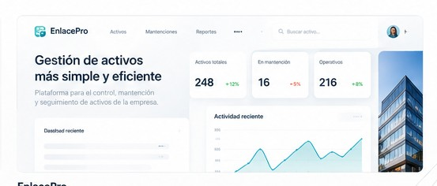

Consultoría y diagnóstico
Analizo procesos, sistemas y necesidades para definir alternativas y una hoja de ruta viable.
Especialidades
Analizo procesos, sistemas y necesidades para definir alternativas y una hoja de ruta viable.
Diseño y desarrollo plataformas empresariales y herramientas adaptadas a cada operación.
Conecto sistemas y organizo flujos de información para reducir tareas manuales.
Casos destacados
Tres proyectos que muestran distintas formas de aplicar tecnología: desarrollar un producto, digitalizar procesos y conectar sistemas empresariales.

Producto SaaSPlataforma SaaS para centralizar activos, documentación, mantenimientos, incidencias y alertas preventivas.
Conocer el casoPlataforma para gestionar participantes, eventos y evaluaciones, con emisión de certificados verificables mediante código o QR.
Conocer el casoEcosistema de integración de aplicaciones y supervisión de procesos para un laboratorio veterinario.
Conocer el casoProceso
Entiendo el proceso y defino el alcance correcto.
Arquitectura, prioridades y plan por etapas.
Entregas parciales que usted puede validar.
Despliegue, capacitación y documentación.
Mejora continua de lo construido.
Experiencia por sector
He trabajado en distintos sectores, desarrollando soluciones para conectar sistemas, automatizar procesos y mejorar la continuidad operativa.
Productos digitales orientados al consumidor final, con mejoras en el agendamiento de pedidos y la experiencia digital de una distribuidora nacional.
Automatización de procesos, integración de sistemas y paneles operativos en tiempo real para un laboratorio veterinario.
Plataformas de evaluación y emisión de certificados digitales, integradas con sistemas de aprendizaje y validación mediante QR.
Sistemas para operaciones portuarias y una torre de control que centraliza dispositivos GPS de distintos protocolos.
He trabajado dentro de operaciones consolidadas y construido productos propios, por lo que entiendo tanto las exigencias de una empresa establecida como la velocidad de un producto en crecimiento.
Sobre mí
Soy Gustavo Cárdenas, desarrollador y arquitecto de software con más de 10 años de experiencia. Combino el análisis de negocio con una implementación rápida, y trabajo directamente con quien toma las decisiones.
Contacto
Cuénteme su caso. Revisemos su necesidad e identifiquemos posibles caminos de trabajo.